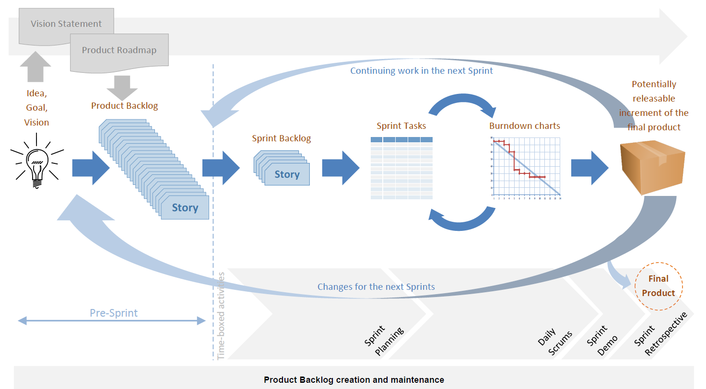
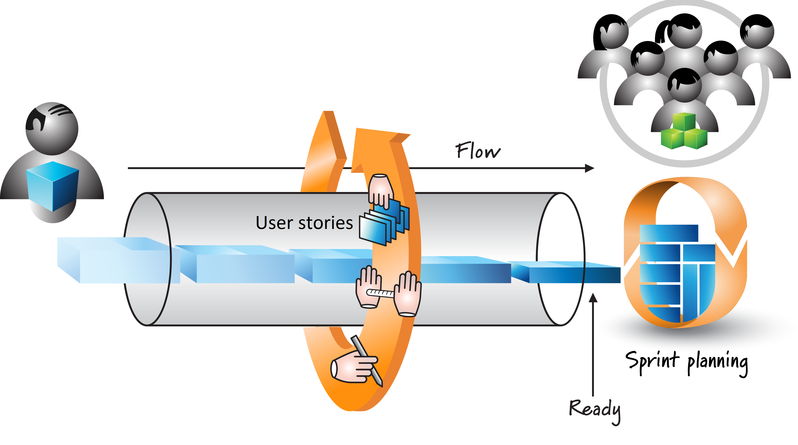
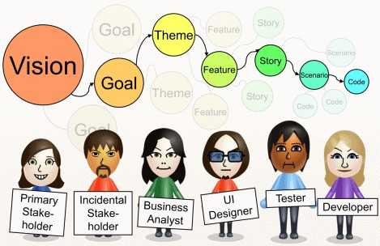
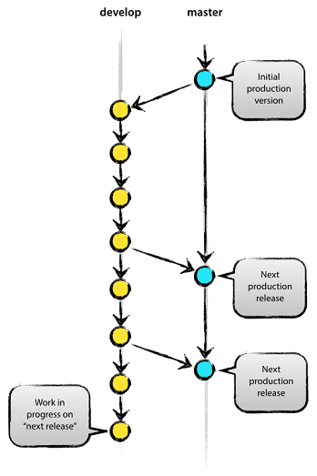
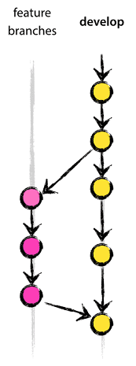
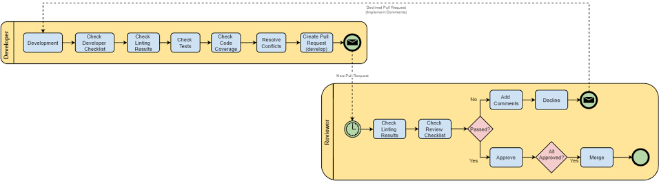
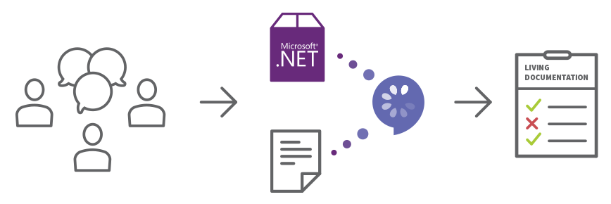

Software development methodology at IBORN.NET
Skopje 2017
Building the product right and building the right product

Software methodology should provide the following
- Shared understanding of what needs to be done
- Precise specification
- Definition Of Done (DoD)
- Documentation
Behavior-driven development

BDD is an "Outside-in" methodology

Acceptance criteria

Optimizing the planning
Improving the scrum methodology

Product backlog
needs to be in a form of a user stories

Bridging the communication gap
Communication with the stakeholders provides the following benefits:
- Implementing changes more efficiently
- Higher product quality
- Less rework
- Better alignment of activities for the different roles on the project

Software development process
Git Branching Model

Decentralized but centralized
- Origin
- Centralized push-pull relationship
- Subteams

The main branches
- master
- develop

The supportive branches
- Feature branches
- Release branches
- Hotfix branches
Feature branches
- These branches are used to develop new features for the upcoming or a distant future release.

Release branches
- Release branches support preparation of a new production release.
- The key moment to branch off a new release branch from develop is when develop (almost) reflects the desired state of the new release.
Hotfix branches
- They arise from the necessity to act immediately upon an undesired state of a live production version.

Code Review
- Catch bugs earlier in the development process
- Improve code quality and maintain architecture
- Implement standards
- Motivate each other to make better solutions
- Share knowledge and gain experience faster
When a feature branch is completed

When a release branch is ready for production

When a hotfix branch is ready for production

How we do it at IBorn

Project management tool - Redmine
BDD in .NET
Behaviour driven development

- SpecFlow.NET - http://specflow.org/
THANK YOU!
Contact us at hello@iborn.net, we would love to hear from you!